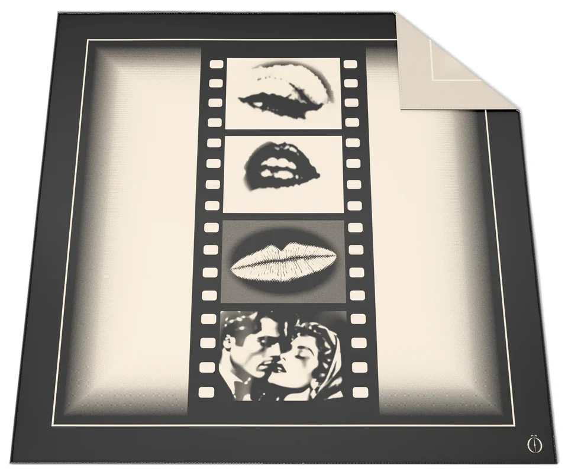
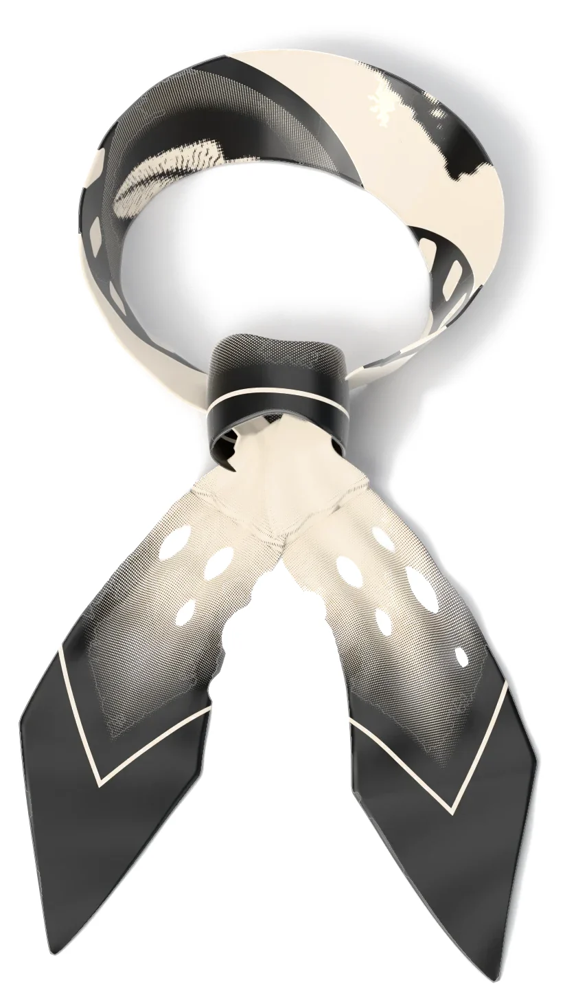

STAND-IN · img/cordel/front/master.* (departments/apparel/new-pieces-2026-11/build/silk-scarf/site/silk_scarf_front_16k.png; 16K, 15360 × 8640)
STAND-IN · img/cordel/knot/master.* (knot view, 8K; 8K, 7680 × 4320) STAND-IN · img/cordel/detail-print/master.* (the print, 8K close-up; 8K, 7680 × 4320)
STAND-IN · img/cordel/detail-print/master.* (the print, 8K close-up; 8K, 7680 × 4320) STAND-IN · img/cordel/detail-hem/master.* (the rolled hem, 8K close-up; 8K, 7680 × 4320)
STAND-IN · img/cordel/detail-hem/master.* (the rolled hem, 8K close-up; 8K, 7680 × 4320)Chapter I · Accessories
Cordel
Silk scarf
Chapter I in four frames. A film strip running down a 90 cm square of silk twill, the Ö in one corner like the studio's mark.
- SILK
- TWILL
- DIMENSIONS
- 90 × 90 CM
- COLOURWAY
- BLACK / CREAM
Price on request
ReserveMade to order. Delivery date confirmed by email.
Delivered in the house box.
Details
- Made to order
- Made to order. We email your delivery date once production is confirmed. Cancel for a full refund any time before production starts.
- Returns
- Exchanges within 14 days of delivery, unused and with tags. Returns
- Care
- Dry clean. Steam on low from the inside; no direct iron on the satin. Keep out of strong light. Care
- Size
- The measurements
 STAND-IN · img/cordel/world/master.* (C4: the last frame, the world plate (the café); 8K, 5760 × 7680)
STAND-IN · img/cordel/world/master.* (C4: the last frame, the world plate (the café); 8K, 5760 × 7680)Where it is going · C4
The café
A second cup, still warm.
On the screen in the film, the picture is tomorrow: each piece in the place it is going, with one place kept for someone.
The maker’s notes
Cordel, the silk scarf
- It begins as a print file: 90 by 90 cm of silk twill, two colours, black and cream.
- A border of 8 cm of black carries one cream line, 2.7 mm wide.
- A strip of film runs down the centre, 32.2 cm wide, four sprocket holes to a frame.
- It holds four frames, each 22 by 16 cm, all on one screen of round dots at 45 degrees.
- The edge is rolled onto the face, about 4 mm across, and caught by a stitch every 5.2 mm.
- One mark sits in a corner of the border, 3 cm tall.
Behind it: the same print, seen through the silk, mirrored and fainter.
Read the poem